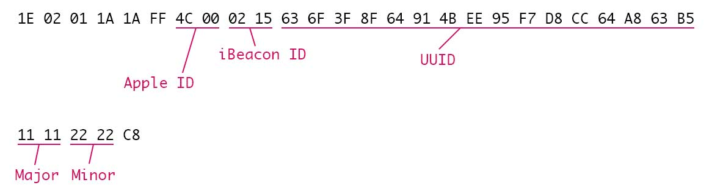

Fysisk webb
"I avdelningen Kundtjänst & Kommunikation fokuserar vi på interaktionen mellan det virtuella och fysiska rummet vilka samspelar intimt med varandra."
— Målbild för Kundtjänst & Kommunikation

- "Beacons" baserade på Bluetooth Low Energy (BLE)
- Sänder "advertisements" via radiovågor
- Mellan 10-50 meters räckvidd
BLE peripheral

"Hej hej, här är jag" ... "Hej hej, här är jag" ... "Hej hej, här är jag" ... "Hej hej, här är jag"
BLE central

Om iBeacons
- Ingår i iOS sedan iOS7 (kräver minst iPhone 4S, iPad 3)
- Signalerar till appar i bakgrunden
-
- Håller koll på avstånd och när du kommer och går. Upp till den lyssnande appen vad som ska hända.
- Sänder UUID + Major- + Minor-värde
-
- T ex: UUID för KIB 3A66FECC69CA43EA9DD12774795F6ACD,
Major 01 för Solna, Minor 09 för skrivarrummet på plan 4.
- T ex: UUID för KIB 3A66FECC69CA43EA9DD12774795F6ACD,
Fördelar med iBeacons
- Inbyggt i iOS
- Lättillgänglig hårdvara
- Kontextuella appar
Nackdelar med iBeacons
- Endast för iOS *i teorin i alla fall
- Kan användas för spårning
- Spam, "data rash"
Om Physical Web
- "Walk up and use anything"
- Skapat ur frustrationen över att behöva ha en app för allting
- Öppen standard för att sända och upptäcka URL:er kopplade till fysiska objekt
- Kan vara stort som smått:
-
- en webbsida med platsbaserad information
- webbapp för interaktion med objekt
- djuplänk in i en native app
- Experiment i startskede. Publicerat 1 oktober 2014
Physical Web exempel
http://www.youtube.com/watch?v=BL6djal9mqY&list=UUQEbVcPF3lBKYBA4FpTp04A
Fördelar med Physical Web
- Plattformsoberoende
- Inga proaktiva notifikationer
- URLar är flexibla
- Ingen spårning
- Utvecklas helt öppet, alla kan bidra
Nackdelar med Physical Web
- Försöksprojekt
- Kräver app i dagsläget
- Max 18 tecken för URL
Physical Web:

iBeacons:
Lekstuga!
Estimote iBeacons

iOS och Android
Beacons finns i rummet
Skattjakt med
Physical Web
- Hitta bokstäver
- Bilda ett ord
Telefoner finns att låna om din inte stöder BLE